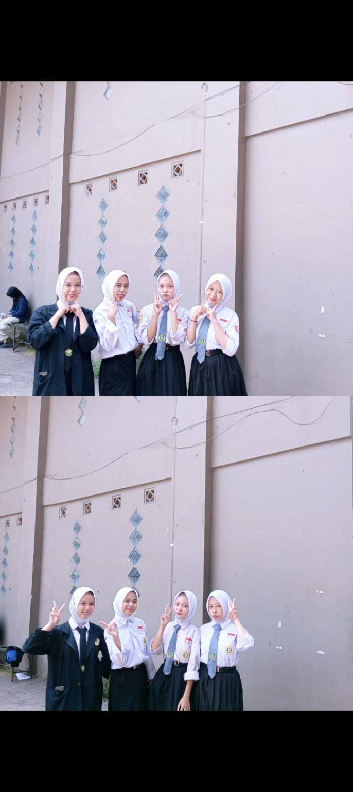

PHOTO #01
Our Little Moment ♡
Foto yang jadi bagian dari cerita kita berempat.
our memories, our chaos, our little moments ♡
Lihat kenangan ↓Foto dan video yang jadi potongan kecil dari cerita kita ♡

Foto yang jadi bagian dari cerita kita berempat.
Inget banget main ke Bogor pertama kali malah hujan, sampe bingung mau neduh di mana 😭 eh dipinjemin payung deh. Mana sok banget lagi pulangnya nggak pake Maps wkwk 😭🫵🏻
Udah berangkat kesorean, terus sempet kepisah si Kasa sama Mega di mana, terus si Nopi sama Bila di mana. Udah dikasih tau lewat VC aja masih salah jalan anjir 😭🫵🏻 HP gua (Kasa) ditaro di tengah-tengah jalan pas di Indomaret 😊 Takut pulang karna ada tawuran, TAUNYA MAH DI JAKARTA ANJIR 😭🫵🏻 Nyari bensin sampe ngodok-ngodok tempat sampah 🫵🏻
Momen yang dimana bingung mau nongkrong di mana tapi tuh duitnya cuma pas-pasan, akhirnya PT aja lah in this economy 😭 Terus nih ya pas main UNO yang harusnya tuh UNO dibalik malah ga dibalik-balik, kan jadinya tau tuh kartunya apa. MANA GA ADA YANG NYADAR LAGI ANJIR 😭😊
Ga pernah terlintas di otak gua KITA KE PASAR BOPAT 😊 sumpah di situ kita nahan malu banget anjir 😔 mana waktu itu pernah ke Gacoan Bopat sampe mau turun di depannya aja saking malunya 😭 tapi kapan lagi ye kan, sekali seumur hidup. Momen yang ga akan kita lupain si‼️
Video kenangan yang ceritanya nanti bisa kita lengkapi lagi.
Perjalanan kecil yang jadi kenangan besar.
Awalnya gua cuma kenal Nopi, sama Bila itu juga cuma kenal nama.
Deket tuh gua sama Mega tapi belum yang sampe bener-bener deket. Nah singkat ceritanya waktu si Nopi sakit terus nitipin si Bila ke Mega (katanya si) sampe kita bikin grup tepat 09/01 2025.
Udah deh kita deket sampe sekarang sampe kita pernah di omongin gara-gara sering ber 4 terus wkwk karna ya sempet ga sempet ya harus ber 4 dong.
Walaupun nanti bakal punya kesibukan sendiri sendiri setelah lulus tetep harus bareng bareng ya jangan ada yang sampe lost contact 😔 cerita antara kita harus tetep ada ya‼️🤍
Galeri foto kita — foto teman-teman bisa ditambah nanti.
Bagian ini nanti tinggal dilengkapi foto teman-teman.
🤍
🤍
🤍
🤍
Beberapa kejadian random yang cuma kita yang ngerti.
Udah dikasih tau lewat VC masih bisa salah jalan. Kisah ini nggak akan pernah selesai dibahas.
Duit pas-pasan, tempat nongkrong seadanya, tapi tetep jadi momen yang seru.
Satu momen yang awalnya malu banget, tapi akhirnya jadi cerita yang nggak bakal kita lupain.
Satu lagu untuk cerita kita — nanti tinggal diganti kalau sudah ada lagu pilihan.
Belum ditentukan ♡
Pesan yang bisa ditulis satu sama lain.
“Makasih udah jadi bagian dari cerita gue.”
— Kasa“Semoga kita tetap ketawa bareng walaupun nanti sibuk masing-masing.”
— Untuk kita berempat“Kalau suatu hari kangen, tinggal buka website ini.”
— Little reminderIni bukan akhir. Cuma tempat kecil untuk menyimpan cerita yang pernah kita punya.